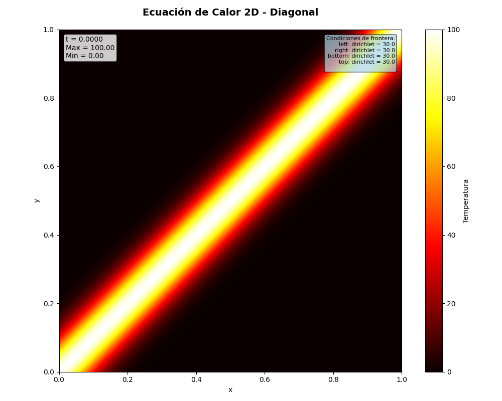

Ejecución y Resultados
Ejemplo 1 (python) – Condición inicial diagonal con fronteras Dirichlet a 30 °C¶
En este ejemplo se resuelve la ecuación de calor en 2D con:
- Condición inicial: Diagonal (gradiente fuerte de temperatura en la diagonal).
- Condiciones de frontera: Dirichlet en los cuatro bordes, todas fijadas a 30 °C.
- Parámetros numéricos:
- \(N = 250\) puntos interiores por dimensión.
- \(M = 500\) pasos de tiempo.
- \(h_x = h_y \approx 0.003984\).
- \(k = 0.001300\).
- \(\mu_x = \mu_y \approx 81.90\).
- Tamaño del sistema lineal: \(62500 \times 62500\).
Entradas y configuración en la terminal¶
====================================================================== ECUACIÓN DE CALOR EN 2D ====================================================================== Selección de condición inicial 1. Distribución Gaussiana 2. Anillo 3. Diagonal 4. Forma de U 5. Cuatro esquinas
Seleccione una opción (1-5): 3
Seleccionado: Diagonal Configuración de condiciones de frontera
Tipos de condición: Dirichlet: temperatura fija en la frontera Neumann: flujo de calor en la frontera (0 = aislado)
--- Borde Izquierdo --- Tipo de condición (dirichlet/neumann): dirichlet Valor: 30
--- Borde Derecho --- Tipo de condición (dirichlet/neumann): dirichlet Valor: 30
--- Borde Inferior --- Tipo de condición (dirichlet/neumann): dirichlet Valor: 30
--- Borde Superior --- Tipo de condición (dirichlet/neumann): dirichlet Valor: 30 Iniciando simulación... Configuración del solver: N = 250 (puntos interiores por dimensión) M = 500 (pasos de tiempo) hx = 0.003984 (paso espacial en x) hy = 0.003984 (paso espacial en y) k = 0.001300 (paso temporal) μx = 81.901300 μy = 81.901300 Tamaño del sistema: 62500 × 62500
Condiciones de frontera: left: dirichlet = 30.0 right: dirichlet = 30.0 bottom: dirichlet = 30.0 top: dirichlet = 30.0 Resolviendo...
Análisis de temperatura: t=0.0000 | Temp. máx: 100.0000 | Temp. mín: 0.0000 t=0.0065 | Temp. máx: 44.3588 | Temp. mín: 2.8183 t=0.0130 | Temp. máx: 35.0247 | Temp. mín: 9.6362 t=0.0195 | Temp. máx: 31.6915 | Temp. mín: 15.5702 t=0.0260 | Temp. máx: 30.3708 | Temp. mín: 19.6366 t=0.0325 | Temp. máx: 30.0030 | Temp. mín: 22.2236 ... t=0.6435 | Temp. máx: 30.0000 | Temp. mín: 30.0000 t=0.6500 | Temp. máx: 30.0000 | Temp. mín: 30.0000
Interpretación¶
Al inicio, la temperatura presenta un fuerte gradiente diagonal con un máximo de 100 °C y un mínimo de 0 °C.
Conforme avanza el tiempo, la temperatura máxima desciende y la mínima aumenta, acercándose ambas al valor impuesto en las fronteras (30 °C).
Hacia t≈0.65 t≈0.65, el dominio prácticamente alcanza el estado estacionario, con temperaturas muy cercanas a 30 °C en todo el interior:
Temp. máx ≈ 30.0000 °C
Temp. mín ≈ 30.0000 °C
Esto es consistente con la solución física esperada: con fronteras fijas a 30 °C y sin fuentes internas, la ecuación de calor conduce a un estado de equilibrio térmico uniforme.
Figura 1 — Distribución inicial (condición diagonal)¶

Figura 2 — Distribución final después de la simulación¶

Ejemplo 2 (C++) - Resultados de la paralelización en C++¶
Hilos Tiempo del test 1 820.46 2 460.65 3 371.43 4 328.14 5 309.12 6 294.48 7 271.75 8 235.58 9 227.19 10 219.96 11 207.27 12 202.15 13 239.96
Figura 3 — Gráfico de Speed up en función del número de hilos¶